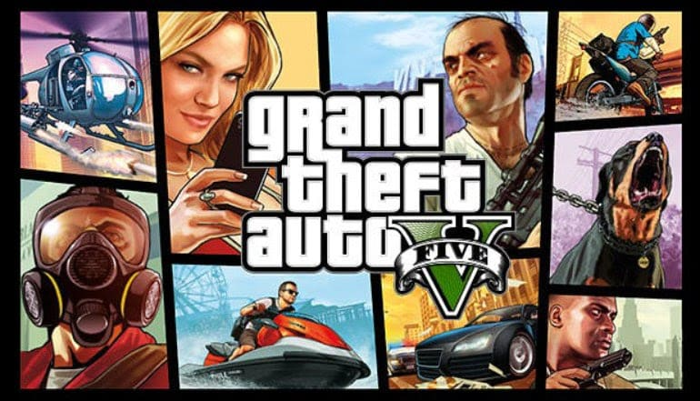

nueva actualizacion de free fire
El popular juego Free Fire a lanzado una nueva actualización conmejores gráficos, nuevos personajes y mapas mejorados para una experiencia más realista. Esta versión incluye optimizaciones en el rendimiento para dispositivos móviles, permitiendo una jugabilidad más fluida y estable incluso en partidas intensas.
Además, se han incorporado nuevas habilidades especiales en los personajes, lo que brinda más estrategias y formas de combate dentro del campo de batalla. Los mapas ahora cuentan con mayor nivel de detalle, efectos climáticos dinámicos y zonas renovadas que hacen que cada partida sea diferente y más emocionante.
PUBG mejora su rendimiento
PUBG ha optimizado su rendimiento para dispositivos móviles,permitiendo una mayorfluidez en partidas con resolución 4K. Gracias aestas mejoras, los jugadores pueden disfrutar de gráficos más nítidos,sombras realistas y una mejor tasa de fotogramas por segundo, incluso enfrentamientos intensos.

GTA V sigue siendo tendencia
A pesar de los años, GTA V continúa siendo uno de los juegos másjugados gracias a sus constantes actualizaciones y su modo online. Sumundo abierto ofrece una libertad casi ilimitada para explorar laciudad, realizar misiones, participar en actividades secundarias osimplemente disfrutar del entorno detallado y realista.